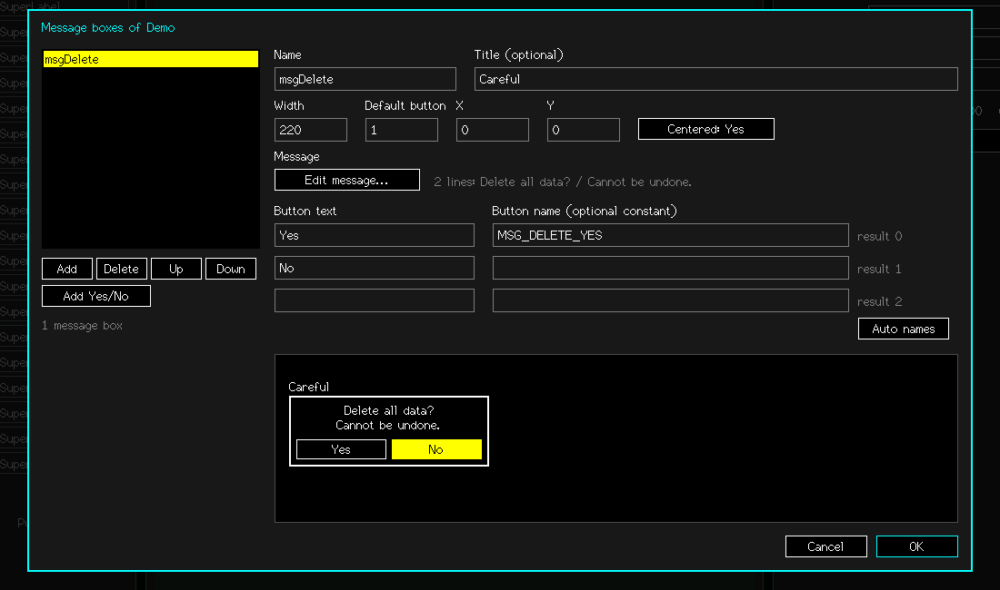

Message boxes
A message box is a modal question ("Delete all data?" with Yes / No). It is not drawn on the form: you open it from code and get the answer. The designer keeps the boxes in a list. Select nothing (click an empty spot of the surface, or press Esc) and click Edit... on the Message boxes row.

The editor
- Name: the member (
msgDelete). Title: optional, shown above the box. - Width, Default button (the highlighted one), Centered or an X / Y position.
- Edit message...: the message is a list of lines (one entry per line, at most 12). Long lines are word-wrapped on the device.
- Buttons: 1 to 3. Type the text; the name next to it is optional and becomes a constant. Emptying a button's text removes the button.
- Look: the Font, Text / Back / Border colours (click to open the font / colour dialog), Rich text (Yes lets the message use the tags: colour, underline, big,
<br>... see SuperRichText) and four optional style fonts for<b> <i> <b><i> <h1>(click the right end of a set font to clear it). - Auto names fills in
MSG_DELETE_YES-style names. Add Yes/No adds a ready-made confirmation box ("Confirm?", Yes / No, No highlighted).
Using a box in your code
// blocking: waits for the answer
if (msgDelete_Ask() == MSG_DELETE_YES) DeleteAll();
// the answer is the button's INDEX; -1 (MSG_CANCELLED) when the user cancelled
int r = msgYesNo_Ask();
if (r == MSG_YESNO_YES) { ... } else if (r == MSG_YESNO_NO) { ... }
// not blocking: keep your loop running
msgDelete_Open(); // show it
int r = msgDelete_Poll(); // every pass: MSG_PENDING while it is openWhen a box closes, the form is redrawn over the area it covered. The text can be changed at run time with msgDelete.SetMessage("..."). Encoder turn moves between buttons, ButtonA chooses, ButtonB cancels (touch works too).
TipName the buttons you test for:
MSG_DELETE_YES reads better than == 0 and survives re-ordering the buttons in the designer.Watch out
_Ask() blocks until the user answers: the rest of your loop() (sensors, networking, animation) does not run meanwhile. Use _Open() / _Poll() when that matters.